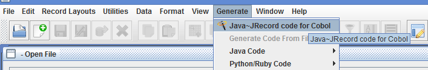
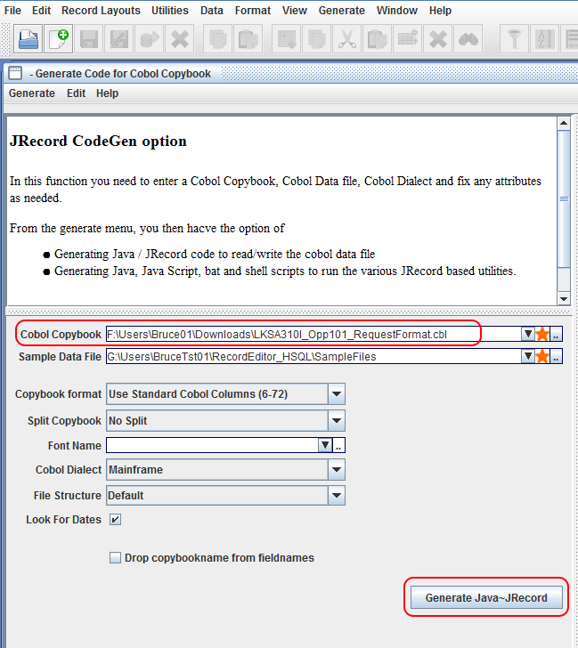
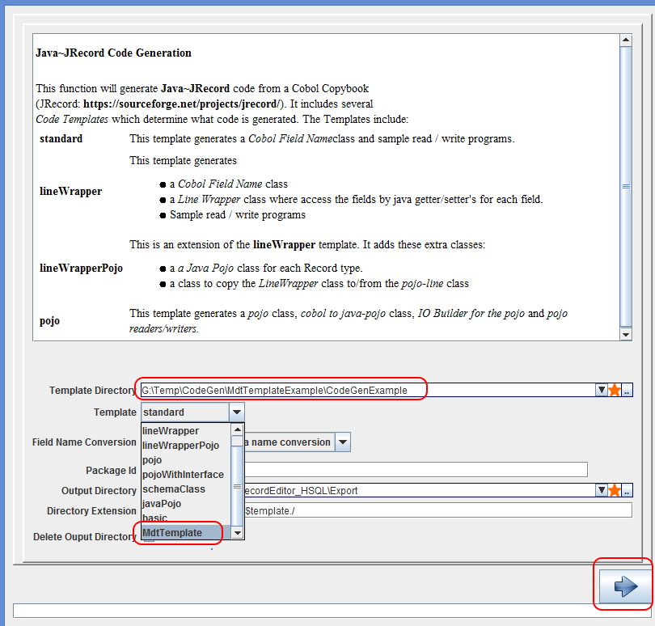

A codeGen Template is a directory with
The MDT template is for Cobol copybooks where every logical field consists of
2 logical fields:
So in the AAA-MDT is the flag indicates if the AAA is present or not
5 20 AAA-MDT PIC X(01). 6 20 AAA PIC X(03). 7 20 BBB-MDT PIC X(01). 8 20 BBB PIC X(03). 9
The Mdt Template generates a "field* for each logical field.
The above will generate
5 public IStringField getAAA() { ... } 6 public IStringField getBBB() { ... } 7
One of the principles is to keep the Velocity Templates as simple as possible and move as much
code as possible into support classes.
The Support code is in the SupportJavaSource directory
Some important classes



if you download the standalone version of CodeGen
you can generate the skel using bat/shell script:
12 java -jar ../lib/JRecordCodeGen.jar ^ 13 -TemplateDirectory CodeGenExample ^ 14 -Template MdfTemplate ^ 15 -Schema LKSA310I_Opp101_RequestFormat.cbl ^ 16 -Package MdfTest.code ^ 17 -outputDirectory MdfOut 18